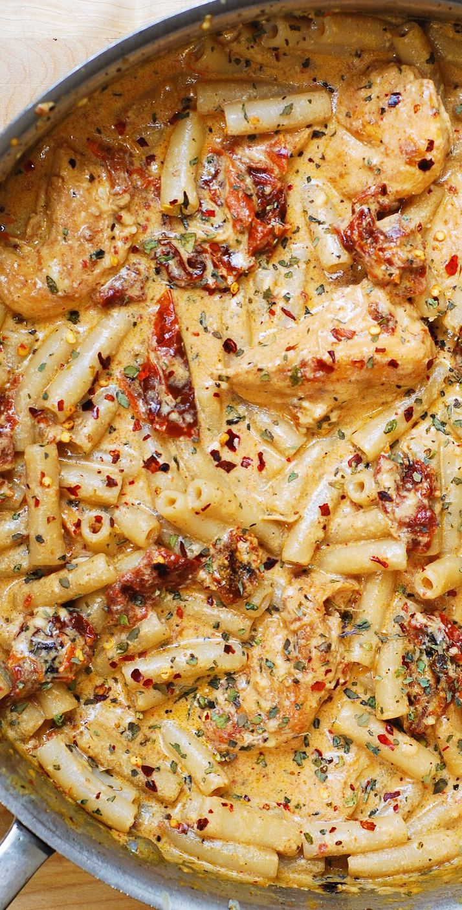

Home
Sun-Dried Tomato Pasta with Chicken and Mozzarella

Description:
Chicken Mozzarella Pasta with Sun-Dried Tomatoes - Italian-inspired dinner with the best homemade creamy pasta sauce! The sun-dried tomato pasta sauce is made from scratch using basil, red pepper flakes, garlic, paprika, cream, and shredded Mozzarella cheese.
Ingredients:
- 3 garlic cloves
- 4 oz sun-dried Tomatoes
- olive Oil
- salt
- paprika
- basil
- 1 cup half-and-half (or 1/2 cup heavy cream + 1/2 cup milk)
- 1 cup mozzarella cheese, shredded
- 1/4 tsp red pepper flakes
Steps
- In a large skillet, cook 3 cloves of minced garlic and 4 oz of chopped sun-dried tomatoes in 1 tablespoon of olive oil on high-medium heat for about 1 minute.
- Add ½ cup of heavy cream + ½ cup of milk (or 1 cup of half-and-half) to the same skillet and bring to a boil. Reduce to simmer.
- Add 1 cup of shredded Mozzarella cheese.
- Simmer and stir until the cheese melts and forms a creamy pasta sauce.
- Add 1 tablespoon of dried basil, paprika, and at least ¼ teaspoon of red pepper flakes. Stir to combine.
- Season with about ¼ teaspoon of salt.